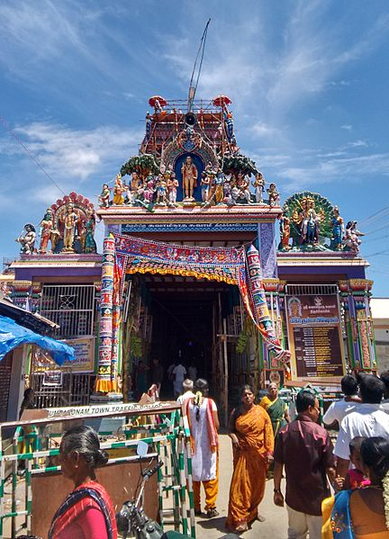

Swamimalai, a brief history
Swamimalai, one of the abodes of Lord Sri Murugan, is situated on the northern banks of the
river Cauvery, in Thanjavur district, Tamilnadu. It is a religious and pilgrimage centre besides
being famous for bronze icons. icons, the sacred images in temples, exist right from the time
the temples came up. here both solid and hollow casting is practised. But solid casting is by
far the more ancient and important tradition in this centre.
Cire perdue solid casting is practised in many districts of Tamil Nadu; among them, Thanjavur
district has the maximum number of centres and craftsmen. The other famous centres with
Swamimalai are Sembanarkoil, Tiruvengadu, Tiruvalenchuli, Tiruvidamarudhur and
Vaitheeswarankoli among these in terms of output and working force, Swamimalai is most
important. There are about a score of families in this village who are engaged in this craft.
These families belong to the Sthapathi caste. They settled here about three generations ago,
but till about 4 generations ago they were working on stones, subsequently they took up
making of bronze icons.
For generations, Swamimalai has been a great pilgrimage centre, which attracts devotees from
far places. One of the six important Murugan (Lord Subramanya) temples set up by the Nayak
rulers during the 17th century is situated here. It is believed that it is here that Subramanya
initiated his father Siva to the realisa- tion of the profound mysteries of religion 2 . The believers
say that Swamimalai the name of the place is itself a confirmation of this. Previously the name
of the place was “Thiruverakam” but as Swami (Siva) received upadesham from Subramanyam
at this place, the name was changed to Swamimalai.
It is said that association of this place with bronze icon making goes back to more than 300
years. at about 1650 A.D., one of the Nayak kings is believed to have brought two silpakaras
(craftsmen) from the north in connection with the construction of the Swaimalai temple. After
the work in the temple was completed they did not go back to their home but settled in the
vicinity of the temple. The present day bronze icon makers of Swamimalai are the descendants
of these two persons. Even now the main concentration of the craftsmen families
Clay from Cauvery River is around the temple.In addition to Swaminathan temple, there are a
number of temples in Swamimalai.
Presence of so many temples and continuous flow of pilgrims were undoubtedly responsible
for the craft to flourish here. Further, the stone sculptures in the temples provided a ready
catalogue of superb designs which inspired the craftsmen to produce the metal icons of high
aesthetic appeal.One material factor which facilitates the development of the craft in this centre is the availability
of clay which was eminently suitable for making different
kinds of moulds. It is said that Agoraveerapathira Sthapathy settled on the banks of River
Cauvery in Swamimalai since he discovered the porous, malleable and fertile clay that the river
bed leaves and found this to be most suitable for the craft of bronze carving during the time of
moulding and casting. The speciality of this clay, till today, keeps the authenticity of this craft
alive in Swamimalai.
HISTORY OF THE CRAFT
In ancient literature, as early as the Rig-Veda, there is a brief reference to hollow casting of
images called Madhuchchhista vidhana. ‘Ghana’ and ‘Sushira’ are the terms used of solid and
hollow casting re- spectively. In Yajur Veda, which is a later compila- tion, references are made
to tin, lead and silver with which ornamental bowls were produced.
Plenty of references w ere made in upanishads as well. The Arthashastra of Kautilya and the
Buddhist and Jain texts in Pali and Prakrit, give references of metals and metal smithy.
Occasional references to Metal arts are found in Ramayana, while in Shantiparva of
Mahabharata the duties of the king inn relation to the artisans are mentioned and their guilds
are enumerated. Manusamhita, Yajnavalkya Samhita and Harivamsa also provide considerable
informa- tion not only about the craft and craftsmen, but also about the mining mining
operations and the artisan guilds.
Agnipurana and MatsyaPurana of the Gupta period have in some detail described the
techniques of bronze casting images and also about the selfless concentration with which the
image marker must bring his work to completion.
The most elaborate treatise on the lost wax process of metal casting is the Shilpashastra (a
treatise on image making). In general, metal casters of South India, follow the principles laid
down by the Shilpashastra. In the Shilpashastras are laid down, elaborate and strict rules
regarding the auspi- cious times when one can start the work, the composition of ingredients
to be used for casting, the various measurements of different parts of the body and their
relative proportions, details of the different stages of casting work, the various postures and
inclinations etc. The rules consist of dhya- nas or verses, describing the spiritual character and
personality of the deity and the Lakshanas or formulae giving the measurements and
suggesting the pattern and form of the figure in keeping with the dhyanas.
EVIDENCES FOUND
The bronze and copper pins unearthed at the sites of Chanhudaro, Mohenjadaro and Harappa
of C. 2500- 1500 B.C., were also produced by the lost wax solid cast- ing process.
Excavations at the ruins of Sirkap (Taxila) have brought to light gold and copper ornaments of
the Hellenistic style which were produced in the lost wax method. The four fragmentary bronze
images of Buddha excavated at Amravati are sufficient proofs to indicate that the Indian metal
caster had achieved high technical skill and creative aesthetic as early as the beginning of the
common era 4 .
Direct evidences of the antiquity of metal casting in India have also come to light and are now
available in plenty. A small bronze statuette of a dancing girl found in the buried city of Mohen-
jadaro in Sindh shows that the process of lost wax was known to India some 5000 years ago
and that it was carried out with great skill and artistry.
Melting of Panchaloha